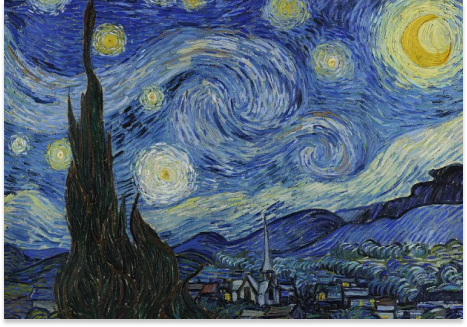
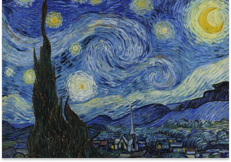
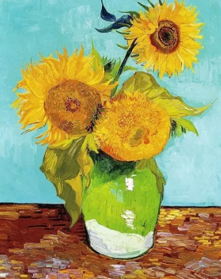

¡Descubre el mundo de Van Gogh con nosotros! Explora los colores primarios y las técnicas distintivas del
maestro. Únete a un ambiente cálido y divertido para desarrollar tu propia voz artística.
¡Te esperamos para explorar juntos el arte de Van Gogh!
Vincent van Gogh, nacido en 1853 en los Países Bajos, fue un pintor postimpresionista cuyo legado artístico
perdura hasta hoy. A lo largo de su corta vida, produjo más de 2,000 obras de arte que reflejan su intensa
pasión y su búsqueda incansable de la expresión emocional a través de la pintura. Experimentó con una
variedad de estilos y técnicas, desde el realismo hasta su característico uso de pinceladas audaces y
colores vibrantes. Van Gogh es conocido por su expresiva representación de la naturaleza y sus profundos
autorretratos, que reflejan su lucha interna y su profunda conexión con el mundo que lo rodeaba. Aunque no
alcanzó reconocimiento en vida, su obra se ha convertido en un pilar del arte moderno, inspirando a
generaciones de artistas y admiradores en todo el mundo.
 

En nuestro taller, te enseñaremos la técnica distintiva del maestro, incluyendo su famoso método de impasto
utilizado en obras como 'La noche estrellada'.
Aprenderás a aplicar la pintura en gruesas capas sobre el lienzo, creando texturas visibles y vibrantes que
capturan la luz de manera única. Con pinceles gruesos y espátulas, explorarás cómo esta técnica puede dar
vida a tus propias creaciones, permitiéndote expresarte de manera vigorosa y emocional en cada pincelada.
También aprenderás a capturar la esencia y la belleza de los girasoles al estilo de Van Gogh. Aprenderás a
utilizar pinceladas audaces y espesas para crear texturas vibrantes y capturar la vitalidad de las flores.
Exploraremos técnicas de aplicación de la pintura en capas gruesas para lograr efectos de luminosidad y
movimiento similares a los de Van Gogh. Con la guía de nuestros instructores, podrás expresar tu propia
interpretación artística de "Los Girasoles" mientras desarrollas tus habilidades y técnicas en el arte de la
pintura. ¡Únete a nosotros y descubre cómo pintar como un maestro!
